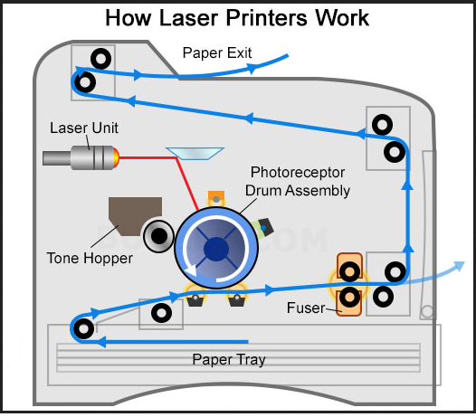

Laser-Jet Printers
Laser printing is an electrostatic digital printing process. It produces high-quality text and graphics (and moderate-quality photographs) by repeatedly passing a laser beam back and forth over a negatively charged cylinder called a "drum" to define a differentially charged image.[1] The drum then selectively collects electrically charged powdered ink (toner), and transfers the image to paper, which is then heated in order to permanently fuse the text, imagery, or both. As with digital photocopiers, laser printers employ a xerographic printing process. However, laser printing differs from analog photocopiers in that the image is produced by the direct scanning of the medium across the printer's photoreceptor. This enables laser printing to copy images more quickly than most photocopiers.
Invented at Xerox PARC in the 1970s, laser printers were introduced for the office and then home markets in subsequent years by IBM, Canon, Xerox, Apple, Hewlett-Packard and many others. Over the decades, quality and speed have increased as price has fallen, and the once cutting-edge printing devices are now ubiquitous.

Jump to Required Page :
Homepage
Impact Printer
Dot-Matrix Printer
Non-Impact Printer
Ink-Jet Printer
Comparision Between Dot-Matrix, Laser-Jet and Ink-Jet Printers
About Us
Register for Getting Best Deals on Electronic Devices